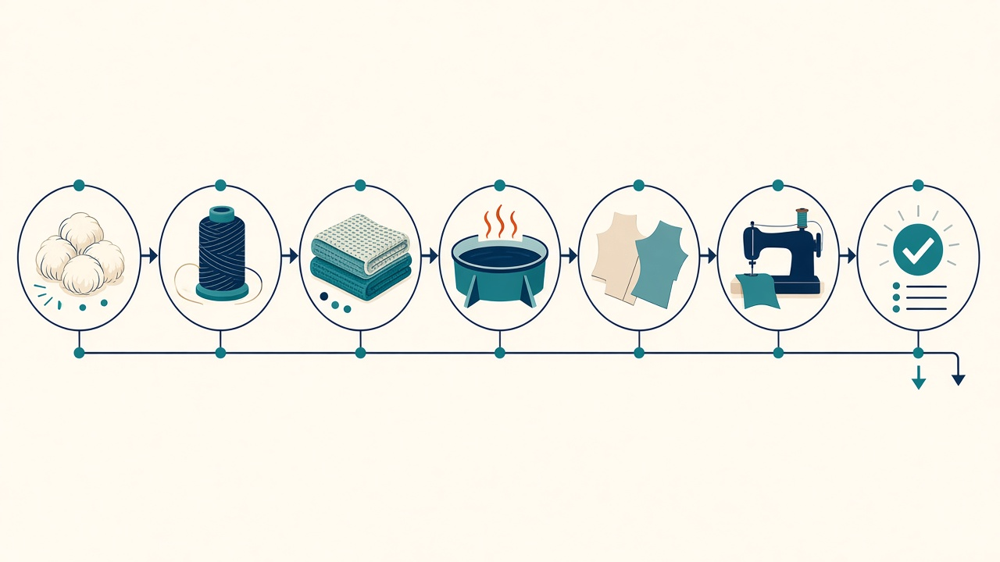
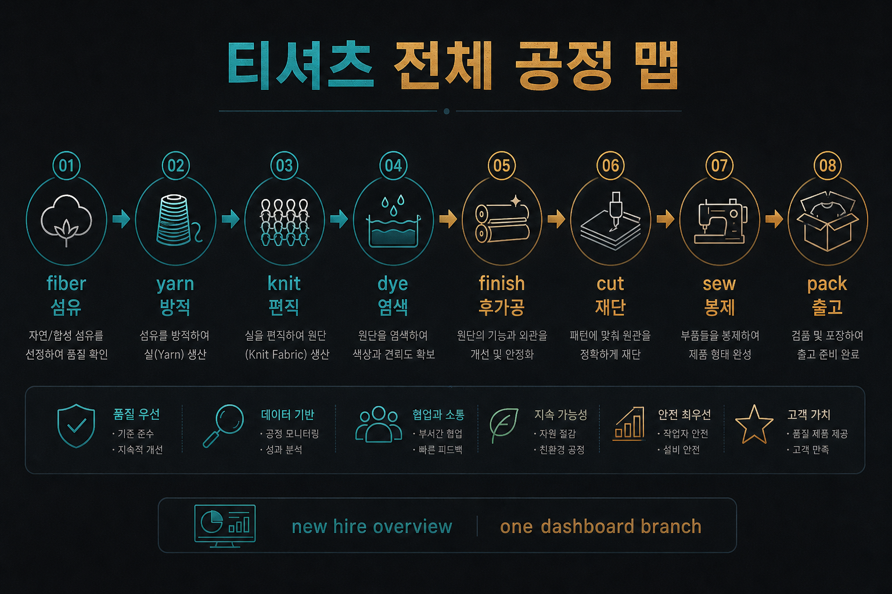

교육자료 · 전체공정
티 한 벌이 지나가는 길을 한 줄로 본다. 쉬운 말: 재료 → 실 → 원단 → 색 → 손질 → 자르기 → 바느질 → 보내기. 세부는 각 칸 페이지.
개요 맵이다. 세부는 각 칸을 연다. 선염은 실을 먼저 염색한 뒤 편직한다.
이 페이지 숫자로 공장 규격을 정하지 않는다. 작지·바이어 스펙을 본다.


본선(후염): 섬유 → 방적 → 편직 → 염색 → 후가공 → 재단 → 봉제 → 출고.
선염 분기: 섬유 → 방적 → 사염(선염) → 편직 → (필요 시 후가공) → 재단 → 봉제 → 출고. 염색 칸의 선염·후염과 같다.
쉬운 말: 옷 재료 고르기.
방적쉬운 말: 솜을 실로 뽑기.
편직쉬운 말: 실로 원단 짜기.
염색쉬운 말: 색 넣기. 실 먼저(선염) / 원단 뒤(후염).
후가공쉬운 말: 손질·폭·수축 잡기.
재단쉬운 말: 원단 쌓고 자르기.
봉제쉬운 말: 부품 바느질해 옷 만들기.
쉬운 말: 검사·포장 후 보내기. (개요)
쉬운 말: 어떤 미싱·실 몇 가닥. 기종·콘수·ISO 스티치.
원단검사쉬운 말: 롤 보고 결점 점수. 4점법 등.
프린트쉬운 말: 그림 찍는 길. DTP·DTF·DTG 등.
생산관리에서 보는 역할이다. 팀 이름·조직도는 현장마다 다르다.
쉬운 말: 오더·날짜를 공정에 나눠 본다. 막히는 칸을 먼저 잡는다.
쉬운 말: 섬유→방적→편직→염색·후가공이 어디까지 왔는지 티켓·일정으로 본다.
쉬운 말: 원단 들어온 뒤 쌓기·도면·봉제 라인에 넣는 순서.
쉬운 말: 원단 검사·완검·포장. 불량은 앞 공정으로 알린다.
쉬운 말: 한 칸만 보면 납기가 안 보인다. 맵의 앞뒤를 같이 본다.
쉬운 말: 팀 짜는 법은 공장마다 다르다. 여기는 역할 개념만.
교육용 영상은 이 페이지에 아직 없다.
섬유 → 방적 → … → 출고.
후염 본선은 실→원단→염색. 선염 분기는 방적 다음 사염(선염)이 먼저다.
염색 후 텐터 등 후가공으로 안정화.
재단 부품 → 봉제.
관련 칸. 기종·실 콘수.
관련 칸. 롤 시각 4점.
한 줄로 앞뒤 공정을 보는 용도.
역할 개념만. 팀 배치는 현장·작지.